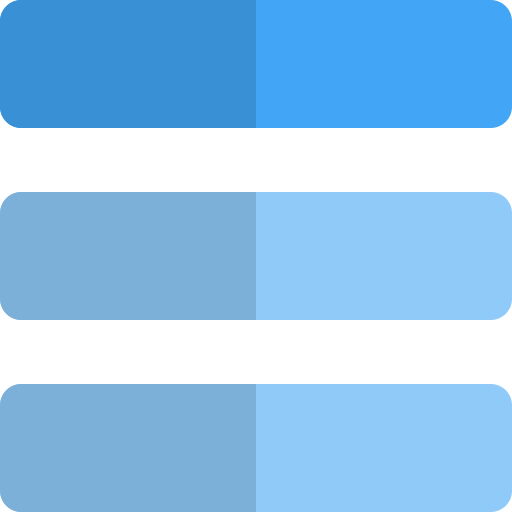

Total imports
0

Private datasets available
Review every Excel or CSV dataset imported under your doctor account, reopen clean cohorts for prediction, and remove files you no longer need.
Private datasets available

Structured patient records
Newest dataset update
Search by file name, sheet, or column name. Opening an import takes you directly to the patient table.
| Dataset | Rows | Uploaded | Sheet | Size | Status | Actions |
|---|---|---|---|---|---|---|
|
Loading your imported datasets...
|
||||||
Supports .xlsx, .xls, and .csv files.
Files are stored in private protected storage and are not visible to other doctors or admins.
This will remove the selected imported dataset from your private import registry.